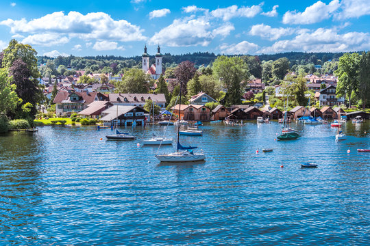

 july, 2021 Starnberger See Germany Close to the Munich city center as it is about 25 min away via S6 (Starnberg). Starnberger is Germany's second-largest body of fresh water. Activities to do : Ship&Boat SwimmingPool Strolling bike Picnic grillzone ice-cream Cafes